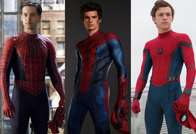

O Homem-Aranha
O Homem-Aranha (Spider-Man no original) o alter-ego de Peter Parker, é um personagem fictício, um super-herói que aparece nas revistas em quadrinhos (banda desenhada em Portugal) americanas publicadas pela Marvel Comics, existindo no seu universo partilhado. O Homem-Aranha foi criado pelo editor/escritor Stan Lee e pelo escritor/artista Steve Ditko, e a sua primeira aparição foi no livro de antologia Amazing Fantasy #15 (Agosto de 1962), durante a Era de Prata da banda desenhada. Lee e Ditko conceberam o personagem como um órfão, que foi educado e criado pela sua Tia May e o seu Tio Ben em Nova Iorque, e, enquanto adolescente, tem de lidar com as lutas diárias normais da sua idade, em adição àquelas que tem como combatente do crime mascarado. Para combater os seus inimigos, os criadores deram-lhe super força e agilidade, a habilidade de conseguir aderir na maior parte das superfícies, a possibilidade de disparar teias de aranha através de mecanismos montados nos pulsos (inventados por ele próprio, a que ele chama "lança-teia" - "web-shooters") e consegue reagir precognitivamente ao perigo com o seu "sentido-aranha" ("spider-sense"). Os seus poderes foram adquiridos após ter sido mordido por uma aranha radioativa.
Um novo tipo de Herói
Quando o Homem-Aranha apareceu pela primeira vez, no inicio da década de 1960, os adolescentes nas revistas em quadrinhos de super-heróis eram habitualmente relegados para papeis secundários, como coadjuvantes do protagonista. A série Spider-Man abriu um novo território ao apresentar Peter Parker, o estudante por detrás da identidade secreta do Homem-Aranha, com as suas "auto-obsessões com a rejeição, inadaptações e solidão", algo com que os leitores mais jovens se podiam identificar. Apesar de ter todas as características de um coadjuvante, ao contrário de outros heróis adolescentes como Bucky e Robin, o Homem-Aranha não tem nenhum super-herói mentor, como o Capitão América e o Batman; ele teve que aprender sozinho que "com grande poder vem sempre uma grande responsabilidade" — uma frase incluída no último painel da primeira história do Homem-Aranha, mais tarde atribuída retroativamente ao seu Tio Ben.
Criação e desenvolvimento
Em 1962, com o sucesso do Quarteto Fantástico, o editor da Marvel Comics e editor-chefe, Stan Lee, estava lançando uma ideia de um novo super-herói. Ele disse que a ideia do Homem Aranha surgiu após o aumento do interesse dos adolescentes para os quadrinhos, e o desejo de criar um personagem com quem os adolescentes pudessem se identificar. Em sua autobiografia, Lee cita o combatente do crime, The Spider, de uma revista pulp que não era um super-herói, como uma grande influência.Em várias entrevistas, Lee indicou que foi mais inspirado por ver uma aranha escalar em cima de uma parede. Em sua autobiografia, ele disse que contou esta história tantas vezes que ele tornou-se inseguro de saber se isso é verdade ou não. Embora naquela época, os super-heróis adolescentes geralmente recebessem nomes que terminavam com "boy", Lee afirmou que ele escolheu "Spider-Man" porque queria que o personagem envelhecesse à medida que a série progredia e, além disso, sentia que o nome "Spider-Boy", teria o feito parecer inferior a outros super-heróis.Naquela época, Lee teve que obter apenas o consentimento do editor da Marvel, Martin Goodman, para a aprovação do personagem. Em uma entrevista de 1986, Lee descreveu em detalhes seus argumentos para superar as objeções de Goodman.Goodman finalmente concordou com um teste para o Homem-Aranha na edição final da série de ficção científica e sobrenatural, Amazing Adult Fantasy, que foi renomeada Amazing Fantasy para esta única edição de número #15 (capa de agosto de 1962, à venda em 5 de junho de 1962), citada várias vezes por Lee. Em particular, Lee afirmou que o fato de que já havia sido decidido que Amazing Fantasy seria cancelada após a edição #15, foi a única razão pela qual Goodman permitiu que ele usasse o Homem-Aranha. Enquanto esta era a edição final, sua página editorial antecipou a continuação dos quadrinhos e que "o Homem-Aranha ... aparecerá todos os meses em Amazing."
Homem-Aranha nas Telonas
O Homem-Aranha já ganhou várias adaptações para o cinema, com alguns atores diferentes, Tobey Maguire: o aranha da trilogia classica, Andrew Garfield: de "O espetacular Homem-Aranha", e mais recetemente Tom Holand: o Homem-Aranha do UCM.
Também já foram feitas diversos desenhos e animações memoráveis como: "Spider-Man" (1994), O "Espetacular Homem-Aranha" (2008) e "Homem-Aranha no Aranhaverso" (2018).
